Roadash: delivery and vehicle recovery platform
A UK platform that connects customers with drivers for parcel delivery and roadside recovery. I built it as four connected products: a customer app, a driver app, a customer website and an admin dashboard.
- Flutter
- Dart
- Laravel
- Livewire
- REST API
- Google Maps
- Firebase
- Push notifications
- SQL
- Google Sign-In
- Apple Sign-In
Book, pay and track a delivery
Senders create a delivery in four steps, see the price before they pay, and follow the driver on a live map.
- Parcel sizes from small to container, each with its own pricing.
- Standard, express and same-day speeds, with instant booking or driver selection.
- Price breakdown with promo codes and optional extra compensation and coverage.
- Bulk delivery upload from CSV or Excel, plus vehicle recovery requests and in-app support chat.
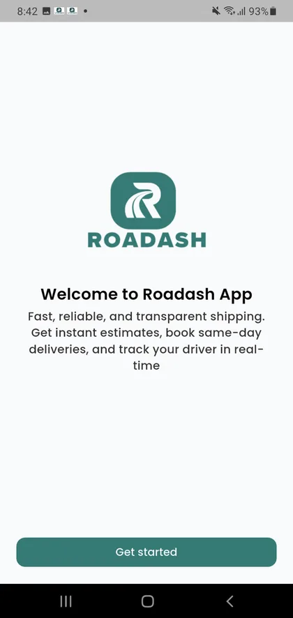

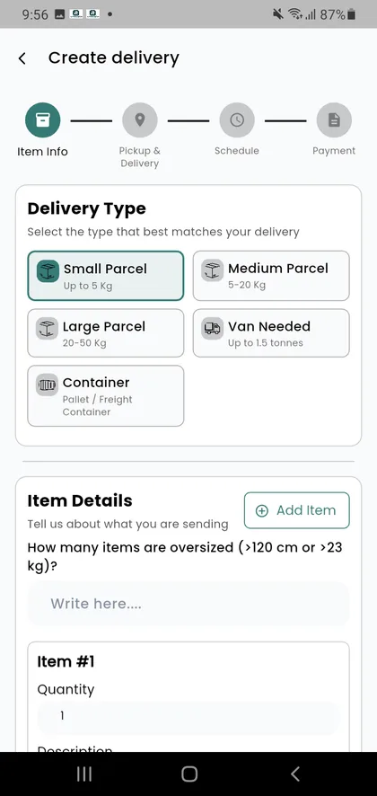
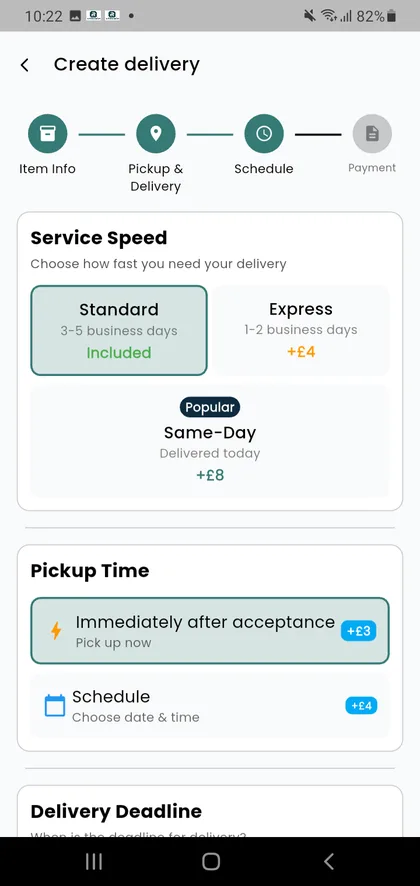
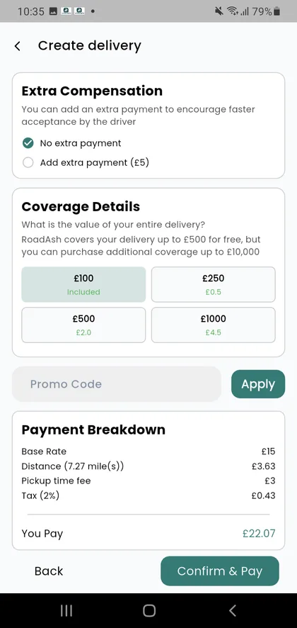
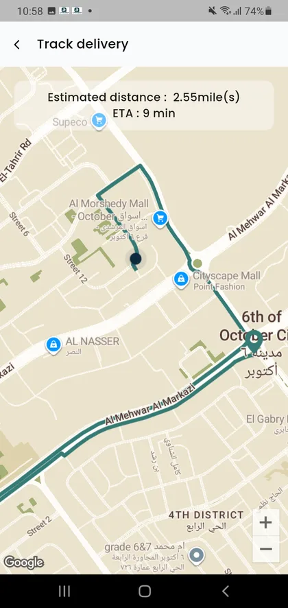
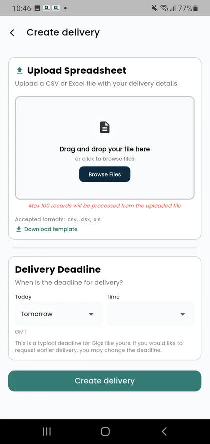
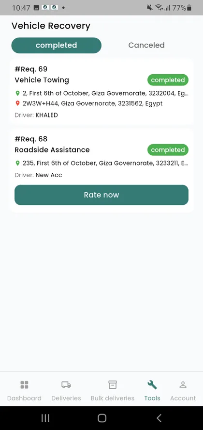
Find jobs and get paid
Drivers browse open deliveries and recovery jobs, accept them, collect a signature and photo on arrival, and track earnings.
- Job marketplace with deadline filters, distance from the driver and map view.
- Proof of delivery with receiver signature and photo.
- Weekly and monthly earnings, cash-out balance and next pay date.
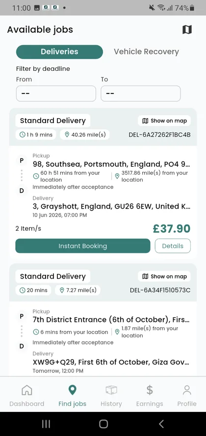
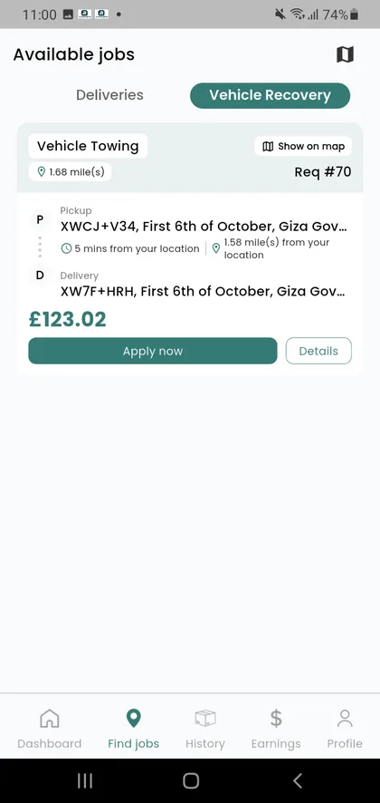
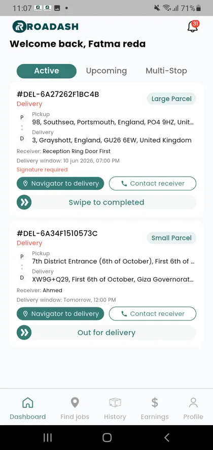
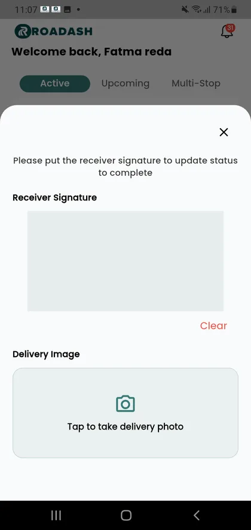
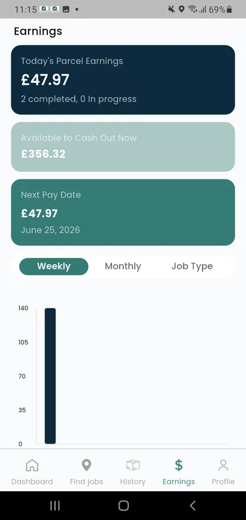
Run the whole operation from one place
Operations staff manage drivers, senders, deliveries and services, and see revenue and commission at a glance.
- Dashboard with driver, sender and delivery counts, weekly chart and revenue split into payouts and commission.
- Driver onboarding and compliance status, delivery tracking, support tickets and reports.
- Configurable delivery types, recovery services, coupons and delivery settings, including per-tier pricing.

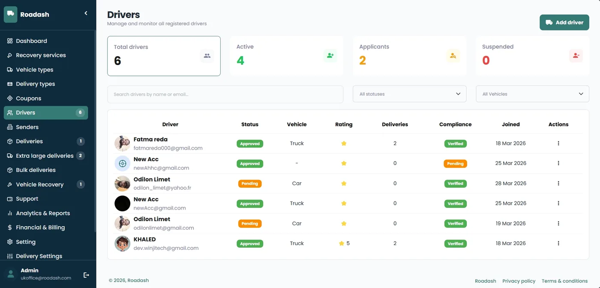
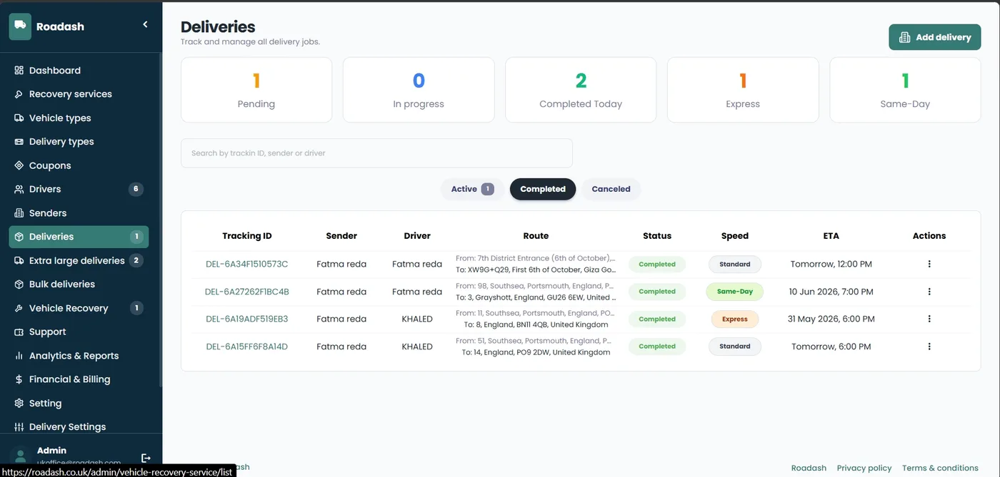
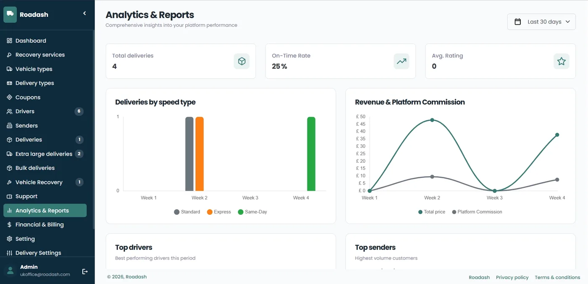
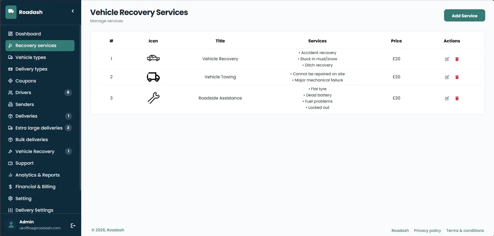
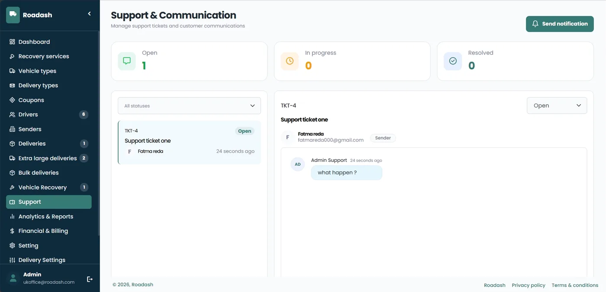
The same booking flow on the web
Customers who prefer a browser get the same delivery flow, account tools and delivery tracking.
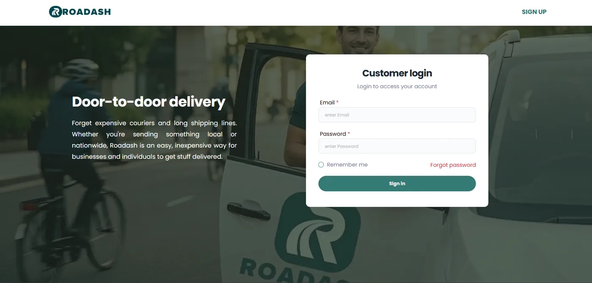
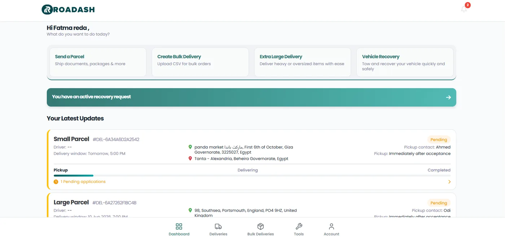
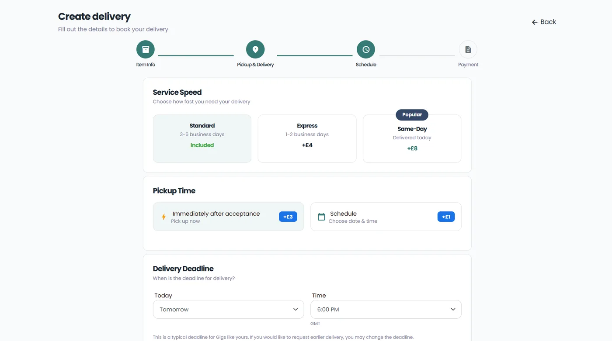